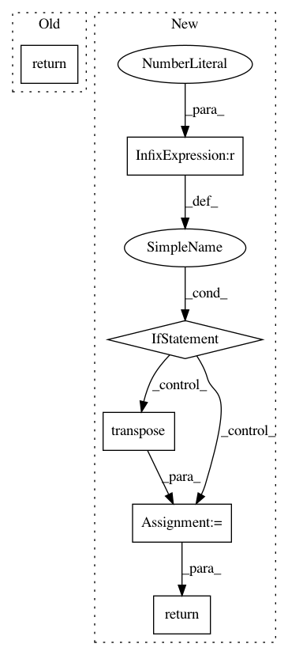

748283f9689365064493d0d434755c33ca16bef7,geomstats/_backend/numpy/linalg.py,,logm,#,45
Before Change
def logm(x):
return np.vectorize(
asp.logm, signature="(n,m)->(n,m)")(x)
def solve_sylvester(a, b, q):
if a.shape == b.shape:
After Change
new_x = to_ndarray(x, to_ndim=3)
if _is_symmetric(new_x):
eigvals, eigvecs = np.linalg.eigh(new_x)
if (eigvals > 0).all():
eigvals = np.log(eigvals)
eigvals = np.vectorize(np.diag, signature="(n)->(n,n)")(eigvals)
transp_eigvecs = np.transpose(eigvecs, axes=(0, 2, 1))
result = np.matmul(eigvecs, eigvals)
result = np.matmul(result, transp_eigvecs)
else:
result = np.vectorize(scipy.linalg.logm,
signature="(n,m)->(n,m)")(new_x)
else:
result = np.vectorize(scipy.linalg.logm,
signature="(n,m)->(n,m)")(new_x)
if ndim == 2:
return result[0]
return result
def solve_sylvester(a, b, q):
if a.shape == b.shape:
In pattern: SUPERPATTERN
Frequency: 3
Non-data size: 6
Instances
Project Name: geomstats/geomstats
Commit Name: 748283f9689365064493d0d434755c33ca16bef7
Time: 2021-01-12
Author: nicolas.guigui@inria.fr
File Name: geomstats/_backend/numpy/linalg.py
Class Name:
Method Name: logm
Project Name: interactiveaudiolab/nussl
Commit Name: 2ffbfa3a6bd3b8de8e21a762489346054dcd9ccc
Time: 2020-03-12
Author: prem@u.northwestern.edu
File Name: nussl/separation/deep/deep_mask_estimation.py
Class Name: DeepMaskEstimation
Method Name: extract_features
Project Name: mariogeiger/se3cnn
Commit Name: 46b762f7987ca6ee9fa44c150cd648b6db8aadc1
Time: 2019-02-24
Author: blondegeek@gmail.com
File Name: se3cnn/point_utils.py
Class Name:
Method Name: neighbor_feature_matrix